Comparative Study of Cisco ACI & Juniper Contrail
- Pradeep H Krishnamurthy
Table of Contents
2. Comparison of Architecture/Design
2.2 Packet Flow & Policy Enforcement
3. Comparison Based On Features
3.1 Deployment, Topology discovery and Element Management
3.3 Support for Physical and virtual infra (from multiple vendors)
3.6 Creating Virtual Networks and Service Chaining
3.8 DCI / Stretched Fabric / Multiple ACI fabrics
3.9 Fibre Channel over Ethernet (FCoE) traffic
3.10 Risk mitigation during provisioning
3.11 Monitoring / Troubleshooting
3.12 LAG / Virtual-Port-Channel
3.13 Operation during downtime of Controller
4.2 Lack of integration with established software stacks
Networking plays a pivotal role in DataCenter and needs to be easily orchestrated to meet various requirements like multi-tenancy, on-demand service, scalability etc. Network industry has seen various innovations like SDN, Network Virtualization, Fabric technologies etc and most networking companies have adopted those technologies in their portfolios.
Cisco’s ACI is a tightly coupled policy-driven solution that integrates software and hardware. It comprises of a IP Fabric based on Cisco Nexus family of switches which is managed by a controller (equivalent of SDN controller) for creating virtual networks and enforcing policies between those networks. It is a proprietary solution.
Juniper’s Contrail Networking is a simple, open, and agile SDN solution that automates and orchestrates the creation of highly scalable virtual networks. In addition, Juniper also offers Contrail Service Orchestrator that fits into the orchestrator component of ETSI-NFVO standard. It focusses more on the network service orchestration and delegates the creation of virtual networks to VIM (ie Virtual Infrastructure Manager like OpenStack) which in turn uses SDN controller (eg: OpenContrail) for creation of virtual networks.
Hence it would be more appropriate to compare Cisco ACI with Juniper Contrail (rather than CSO) in conjunction with VNF manager like Network Director (a JUNOS Space based network management application)
Ø https://www.sdxcentral.com/nfv/definitions/nfv-mano/
Ø http://www.opencontrail.org/opencontrail-architecture-documentation/
Ø https://www.juniper.net/us/en/products-services/sdn/contrail/contrail-service-orchestration/
|
Term |
Meaning |
|
ACI |
Application Centric Infrastructure |
|
APIC |
Application Policy Infrastructure Controller |
|
CSO |
Contrail Service Orchestrator |
|
ND |
Network Director (a JUNOS Space Application) |
|
SD |
Security Director (a JUNOS Space Application) |
|
VNF |
Virtual Network Function |
|
VIM |
Virtual Infrastructure Manager |
|
SA |
Security Association |
ACI
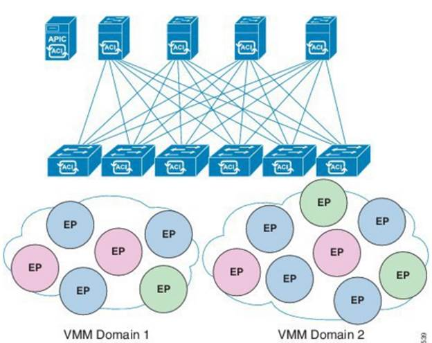
The Application Policy Infrastructure Controller (APIC) manages and configures the policy on each of the switches in the ACI fabric. Users create EPGs (ie End-Point Groups) and tie them to different Domains (like VMM, Physical). Contracts are created between EPGs to regulate traffic-flow and achieve service chaining. It leverages VxLAN protocol to create virtual networks.
CSO
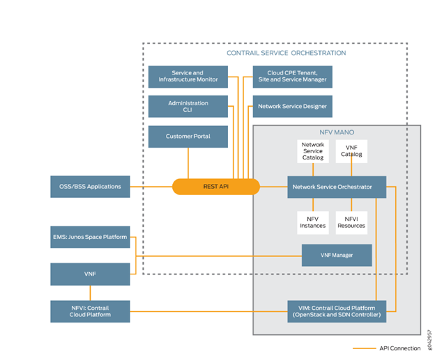
Contrail
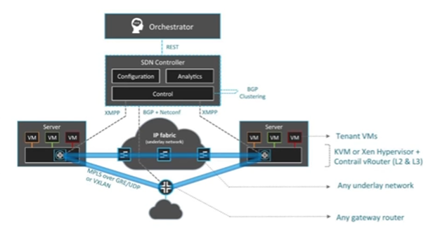
The Contrail solution leverages VIM (eg: OpenStack ) and spawns vRouters(based on vMX image) which are used to create Virtual Networks using either MPLS or VxLAN
ACI comprises of a IP Fabric based on Cisco Nexus family of switches. The leaf switches are configured based on the policies. When packet arrives at leaf, it gets tagged based on EPG ie Policy-enforcement is done at ingress.
Contrail can be used with any IP Fabric which could be from any vendor. The vRouter that is spawned does the Policy-enforcement.
Cisco ACI maintains a complete object model that ensures that it has complete visibility into every component like Spine/Leaf switch, VM Controllers, BareMetals, VMs etc
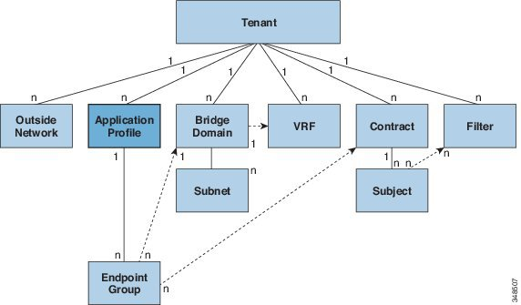
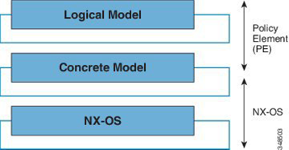
Contrail adopts a delegation model where the management of Virtual Infrastructure (eg: VM controllers like vCenter) is delegated to VIM (eg: OpenStack). The SDN Controller maintains the control information which will be updated based on configuration changes and gets pushed to underlying network
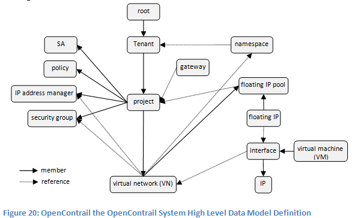
In Cisco ACI packet gets tagged with Policy Identifier and then gets encapsulated in VxLAN packet at the ingress leaf.
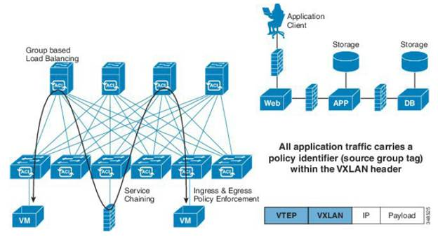
Contrail achieves service chaining by route-manipulation. An additional routing-instance is created for the service virtual machines
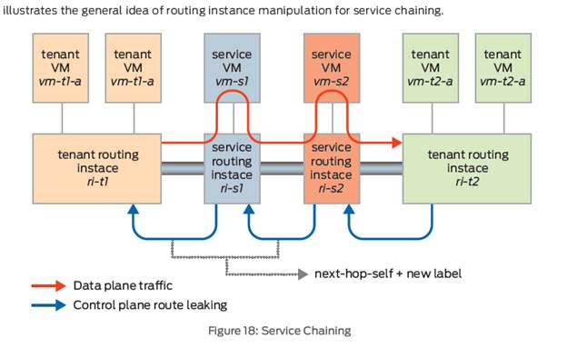
Both ACI and Contrail expose REST APIs for integration with OSS/BSS
ACI – The ACI fabric is brought up in a cascading manner, starting with the leaf nodes that are directly attached to the APIC. LLDP and control-plane IS-IS convergence occurs in parallel to this boot process. The ACI fabric uses LLDP- and DHCP-based fabric discovery to automatically discover the fabric switch nodes, assign the infrastructure VXLAN tunnel endpoint (VTEP) addresses, and install the firmware on the switches. The policy model of APIC contains a complete real-time inventory of the fabric, including all nodes and interfaces. This inventory capability enables automation of provisioning, firmware management, troubleshooting, auditing, and monitoring. That way, APIC provides a single-pane of management and manages the entire lifecycle of Fabric. Information about VM Controllers (like vCenter) are manually provided to APIC
Contrail delegates Topology discovery, Element-management to EMS (eg: Network Director/Security Director). Juniper’s switches support ZTP to speed-up/ease deployment. Network Director has features like OpenClos which allows provisioning of Fabric. Information about VM Controllers (like vCenter) is delegated to open source virtualization orchestration systems such as OpenStack
ACI – Supports External Authentication via TACACS, RADIUS, LDAP/AD
Contrail – Not supported
Both ACI and Contrail support orchestration of both Physical and Virtual Infrastructure. ACI has a concept of device package which allows different vendors to plugin their VNFs to API. Contrail leverages to open source virtualization orchestration systems such as OpenStack which allow VNFs from different vendors
ACI up to 64,000 dedicated tenant networks and 1 million End-points
Contrail – Though specific numbers not available, vMX (ie vRouter) is highly scalable
Both ACI and Contrail support multi-tenancy
ACI – Done via creating EPGs and then creating Contracts for allow/deny-ing communication and also for Service-Chaining between EPGs
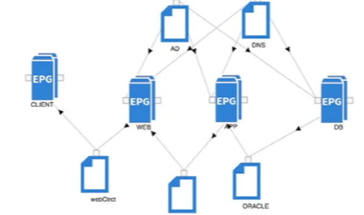
Contrail – Allows creation of Virtual Networks and Service chaining through Policy Management
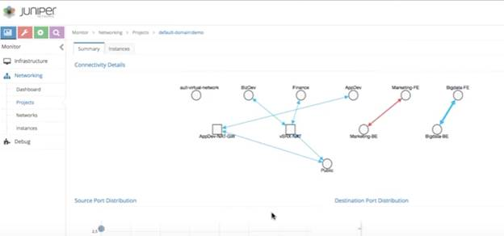
ACI – supports provisioning for external connectivity which could be either L2 (via Bridge network domain profile) or L3 (ie Router network domain profiles)
Contrail – supports creation of a vGW to allow virtual networks to connect to public network
ACI – has the concept of stretched ACI fabric which is a partially meshed design that connects ACI leaf and spine switches distributed in multiple locations (upto 3 sites)
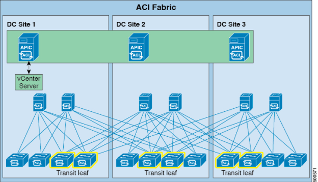
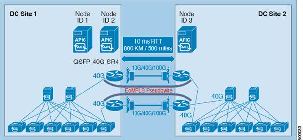
Contrail - this is made possible by federating the controllers in the different sites of a Multi-site DC . The control nodes in each site are peered with other sites using BGP. With this it is possible to stretch both L2 and L3 networks across multiple DCs
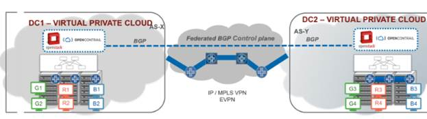
ACI – has support for Fibre Channel over Ethernet (FCoE) traffic on the ACI fabric. The leaf switch can be configured through APIC with virtual F ports for connecting to hosts and virtual NP ports for connecting to FC network
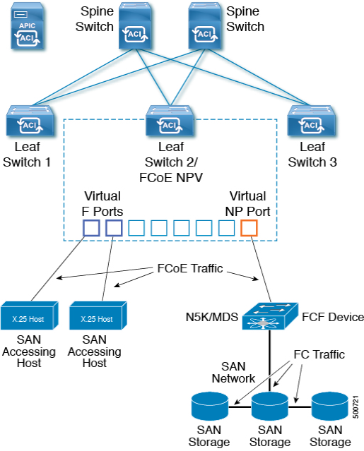
Contrail – customer need to use EMS like Network Director which allows for configuration of Fabric Profiles and FC Gateway service profiles
ACI – has a feature called Configuration Zone which allows dividing the ACI fabric into different zones that can be updated with configuration changes at different times. An administrator can deploy a configuration to a non-critical zone, and then deploy it to critical zones when satisfied that it is suitable
Contrail – Not available
ACI – Administrators can create monitoring policies related to fabric, access/fabric ports, VM Controllers, EPGs and application profiles. Basic troubleshooting tools like Traceroute, Ping are available. It also provides a nice feature called Health Score which can be aggregated for a variety of areas such as for the system, infrastructure, tenants, applications, or services
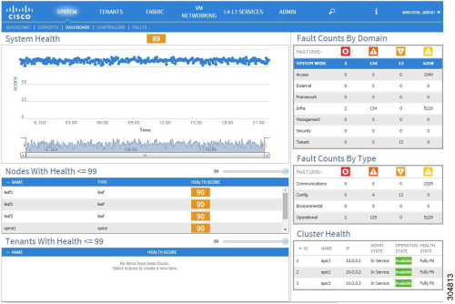
Contrail – has Analytics nodes which are responsible for the collection of system state information, usage statistics, and debug information from all of the software modules across all of the nodes of the system. In addition, users can see the overlay flows over the underlays
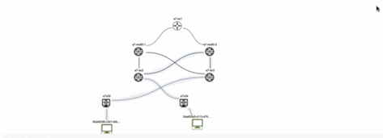
The above diagram shows co-relation of an overlay flow with physical (ie underlay) network
ACI – Supports configuration of vPC where a single server can be dual homed to two different switches for redundancy
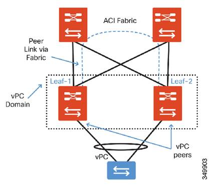
Contrail – configuration of MC-LAG is done through Network Director.
ACI – If APIC is down, traffic still flows
Contrail – supports Headless mode as a resilient mode of operation for vRouter Agent. When running in Headless mode, agent will retain the last Route Path from Contrail-Controller. The Route Path are held till a new stable connection is established to one of the Contrail-Controller
The Fabric used in ACI has to be from Cisco that too a particularly flavor Nexus switches as the solution is dependent on specific features built into the device. To increase the capacity of fabric or for deployment in multiple-sites, this creates a vendor lock-in problem for the customer
The whole concept of APIC being a single-pane of management for everything will not scale. There are well established software stacks in market (like OpenStack, MESOS etc) which provide niche solutions (like OpenStack’s Heat template) which cannot be leveraged by APIC.
Finally, though being termed Application-centric, it is finally used to create and manage networks (aka Virtual Networks) only. It does not focus on other aspects of Application deployment (eg: what is needed to deploy a distributed application in active/standby mode). That still has to be taken care separately by IT department
WebCom wants to deploy an e-Commerce application for Online shopping in its DataCenter. The application consists of a Web-tier and a Database tier. Access to the Web-tier from external clients need to be load-balanced and also needs to be protected by a firewall. Access to the Database-tier needs to be firewall-ed as well
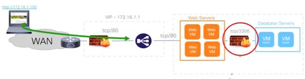
Steps:
Ø In the Tenant tab, create a Tenant
Ø In that Tenant context, create the required Networking
§ Create a VRF
§ Create Bridge domains – WebBD, DbBD (with the required subnets)
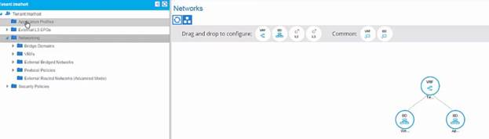
Ø In the Tenant Tab, for that Tenant, create an Application Profile – WebApp
Ø Add the following EPGs – UsersEPG, WebEPG, DBEPG
Create the EndPoints within the EPGs (refer to sample screen-shot below)
Attach relevant Domains (created previously) to the EPGs in Application Profile
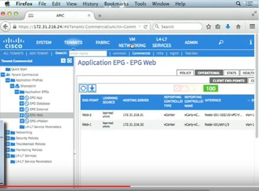
Ø Create the required Contracts between the EPGs and click Submit
Eg: Choose Load Balancer service in the Contract between UsersEPG and WebEPG
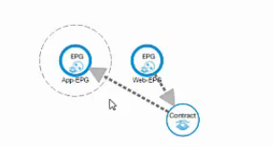
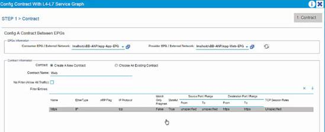
Steps:
Ø Create Virtual Networks
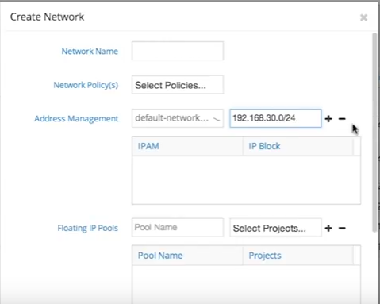
Ø Create Policies between the Virtual Networks
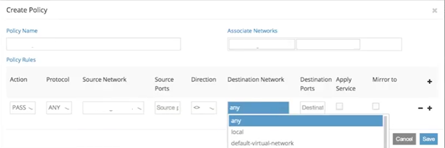
|
Feature |
ACI |
Contrail |
Comments |
|
Creation of Virtual Networks |
Yes |
Yes |
|
|
Policy Enforcement between Virtual Networks |
Yes |
Yes |
|
|
Service chaining between Virtual Networks |
Yes |
Yes |
|
|
Multi-tenancy |
Yes |
Yes |
|
|
Support for configuring external connectivity |
Yes |
Yes |
|
|
Based on Open standards |
No |
Yes |
ACI works with IP fabric from Cisco |
|
Support for initial configuration and Element management of IP Fabric |
Yes |
No |
In case of Contrail, need to use Network Director separately |
|
Non-disruption of traffic during controller downtime |
Yes |
Yes |
|
|
Support for DCI |
Yes |
Yes |
|
|
Ecosystem of partners for VNF functionality |
Yes |
Yes |
|
|
Support for Monitoring and Troubleshooting |
Yes |
Yes |
|
CSO is based on ETSI NFV open standard and fits into the orchestrator component in that design. CSO focusses more on the network service orchestration and delegates creation of virtual networks to VIM (eg: OpenStack) which in turn uses SDN controller (eg: OpenContrail) for creation of virtual networks. Currently, the work flows in CSO associate site with virtual networks (eg: to enable branch connectivity). But considering application deployment, the need would be to associate virtual networks with application tiers (like Web, DB etc). CSO may need to be enhanced to incorporate those workflows.